Der Baulärm ist unerträglich.
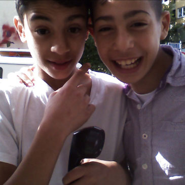
Die Baustelle finde ich nicht gut.
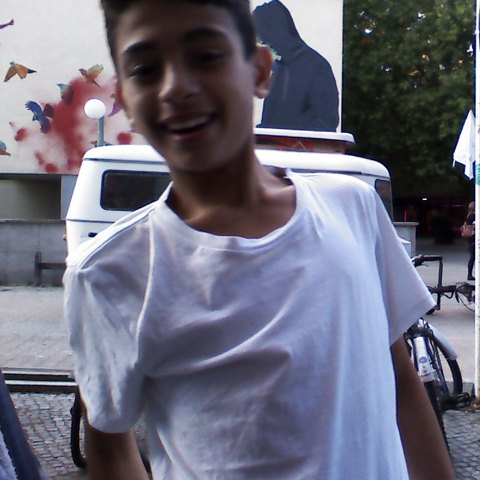
Durch die Baustelle wird mir der Weg zur Schule versperrt, ich will nicht mehr außen rumgehen.
Die Baustelle dauert so lange. Nach 3 Jahren sollte sie fertig sein.
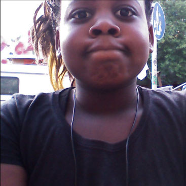
Ich will mich beschweren, dass es immer wenn ich morgens rausgehe, und ihr baut, es so nach Teer stinkt. Da kann man sich gar nicht konzentrieren und man kann nicht mehr das Fenster aufmachen, weil es so laut ist.
Ihr könnt mal den Zaun aufs Minimalste verkleinern und ihn dann auch so lassen. Immer wenn Ihr etwas verändert, kann man den Platz nicht mehr nutzen.
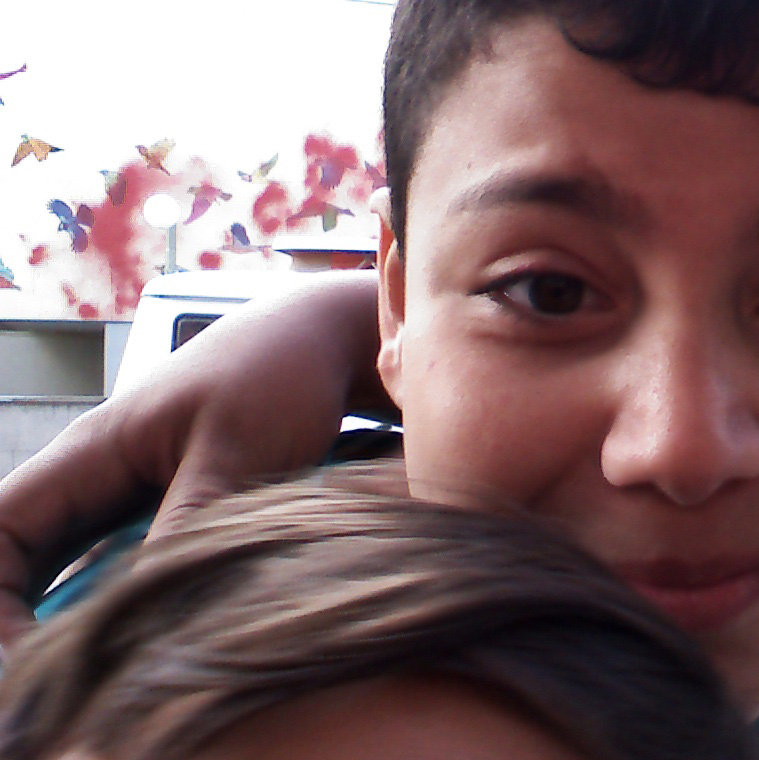
Der Geruch nervt. Ihr müsst schneller machen.
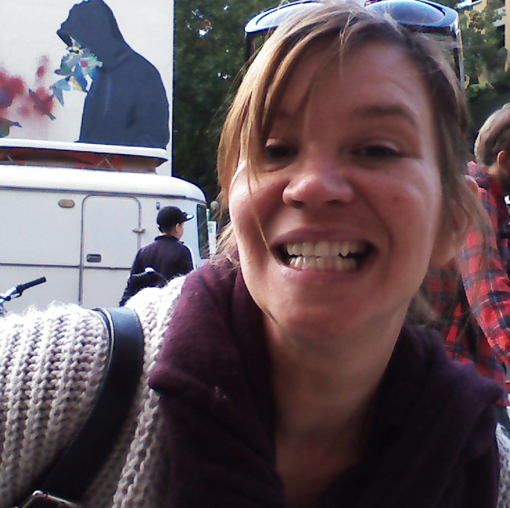
Es ist viel zu laut und es nervt..
Ich komme aus Argentinien und wohne hier seit 4 Jahren. Ich habe nie etwas anderes als die Baustelle gesehen. Ich würde diese Fläche gern für meine kinder als Spielplatz nutzen. Ich verstehe nicht, wie lange das dauert.
Die Baustelle könnt ihr schneller machen. Wir warten alle.
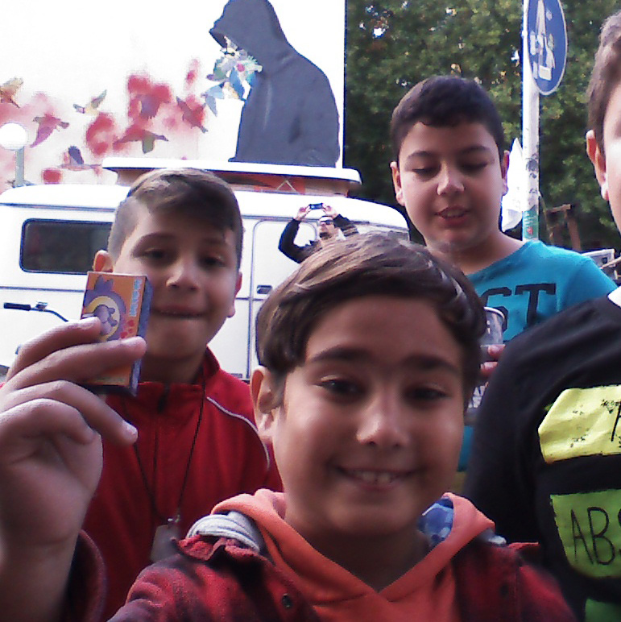
Es dauert viel zu lange. Wieso machen Sie so lange? Ich will, dass Sie schneller machen, sonst hole ich die Polizei!
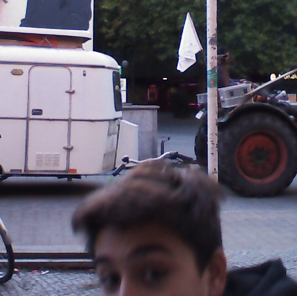
Der, der die Baustelle gebaut hat, soll weggehen. Ihr müsst Euch beeilen.
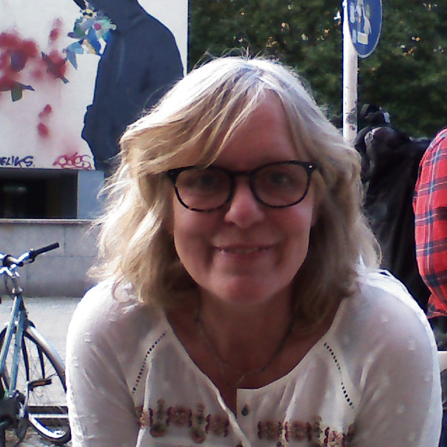
Ich wollte fragen, wie lange sol Baustelle noch eine Baustelle sein wird, und wann wir endlich darüber informiert werden, warum ein Sandhügel von der linken auf die rechte Seite geschaufelt wird und von der rechten zur linken Seite?
Stellt der Baulärm einen Mietmangel dar?
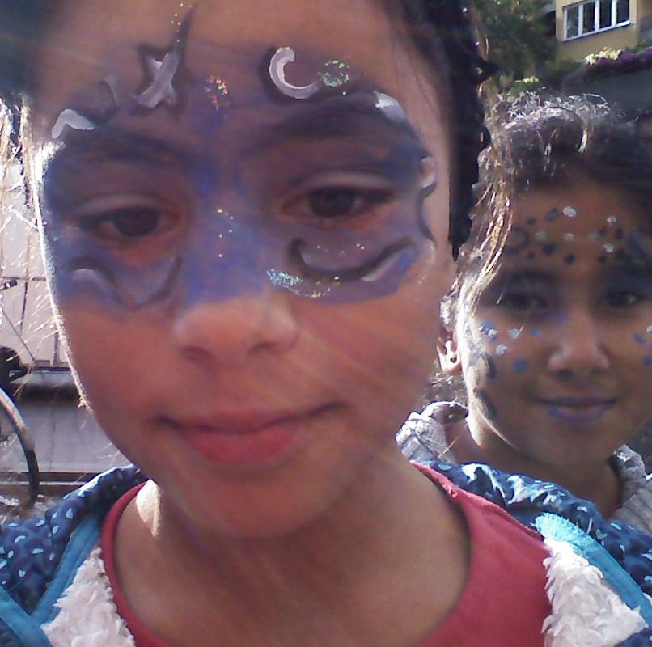
Warum ist die Baustelle da?
Arbeitet Ihr auch samstags und sonntags?
Wann ist das fertig? Wie lange dauert das?
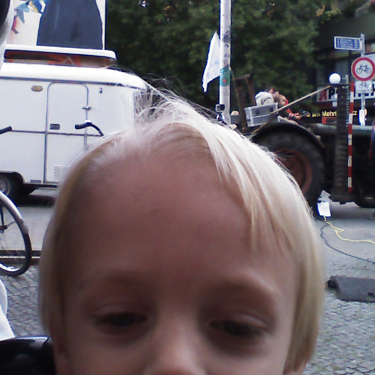
Wann ist die Baustelle fertig?
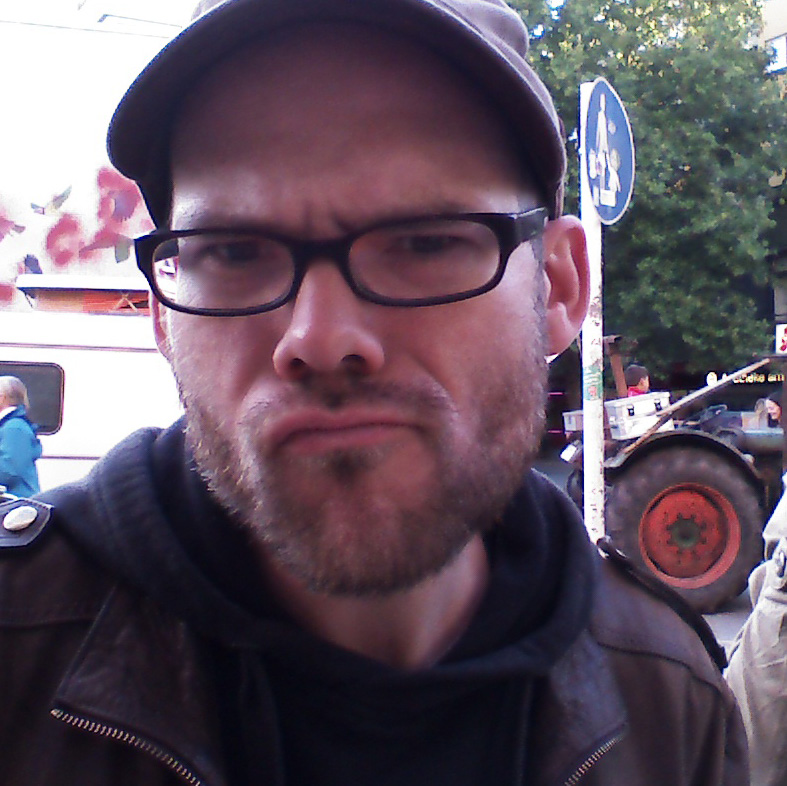
Hallo liebe Baustelle. Ich wollte mal fragen, wie lange du noch hier bleibst? Ich mag ja alle Menschen, aber du könntest langsam mal sagen wie lange du hier noch bleiben willst. und kein Mensch weiß es und keiner weiß, wen man fragen kann. Danke und Tschau.
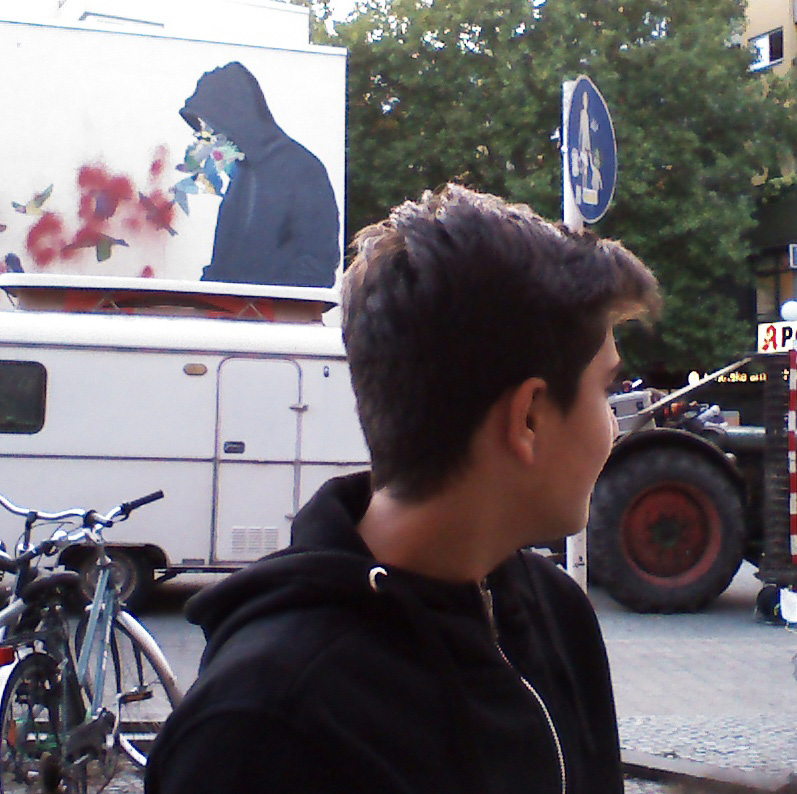
Ich frag mich wann die Baustelle weg ist und wann ich sterbe.
Es soll einen Park am Mehringplatz geben. Die Baustelle soll endlich mal fertig sein.
Es soll einen Spielplatz geben.
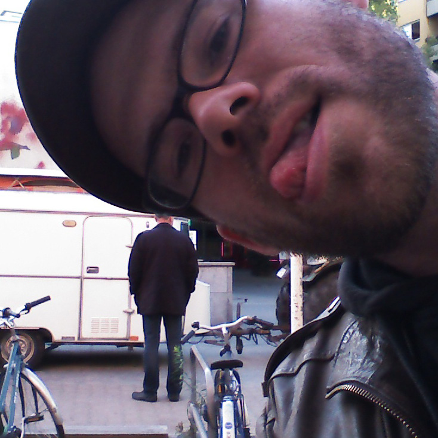
Ich habe eine Idee. und zwar mit den hässlichen Bauzäunen hier. und ich habe eine Idee, was man damit machen kann. Ruf mich an. Tschüss
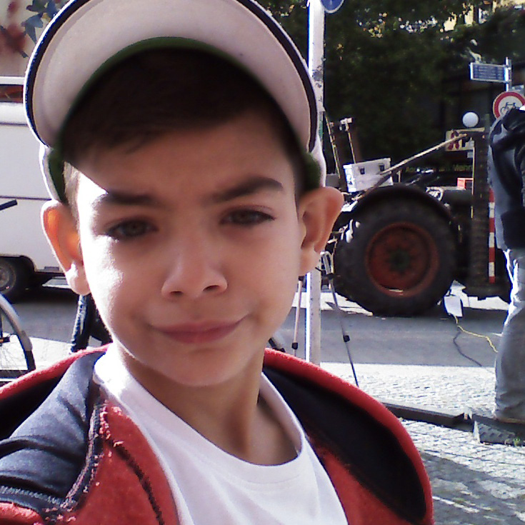
hallo, hier ist Jason. Baustelle soll fertig werden. Es soll einen Spielplatz und Bänke geben, und eine schöne Wiese.
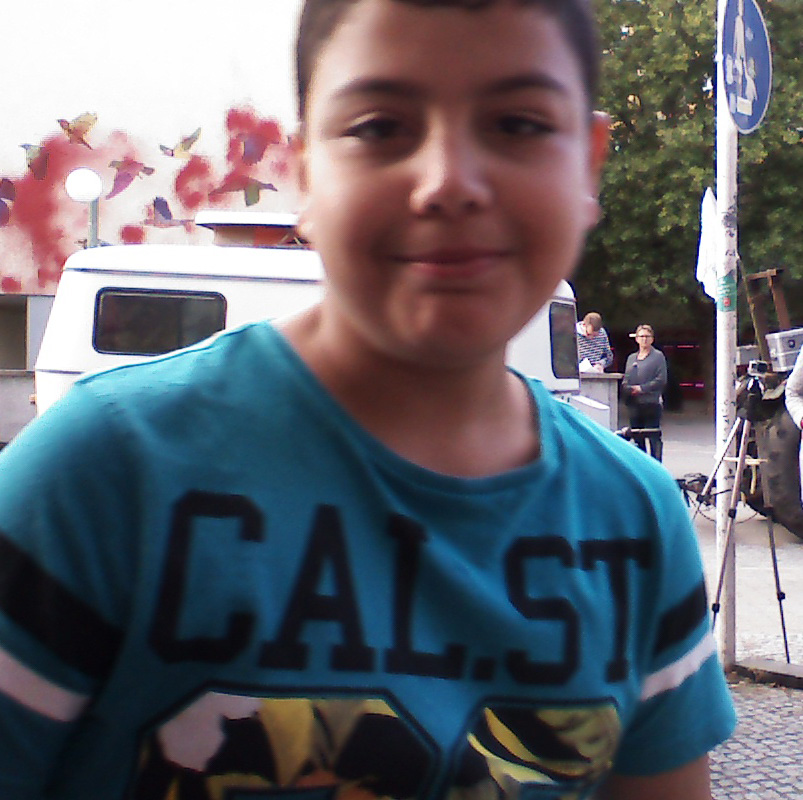
Hundepark, Spielplatz oder nix
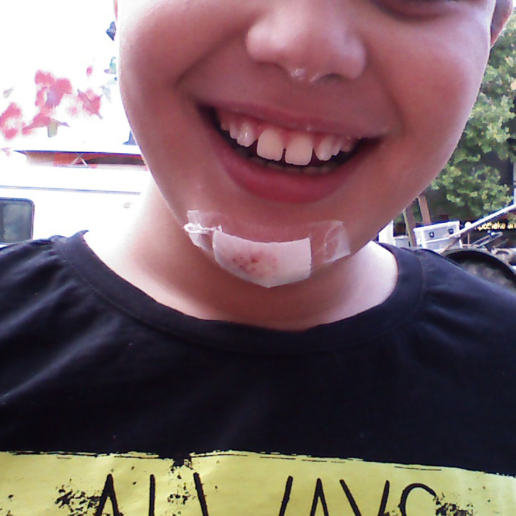
Ihr müsst schneller sein, anstatt in 4 Jahren Verbesserung vorzunehmen. Es soll einen Rummel oder Spielplatz geben/p>
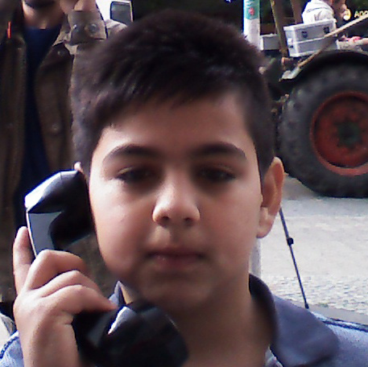
Ich wünsche mir, dass die Baustelle bald fertig ist und dass es einen schönen Park und Bänke gibt.